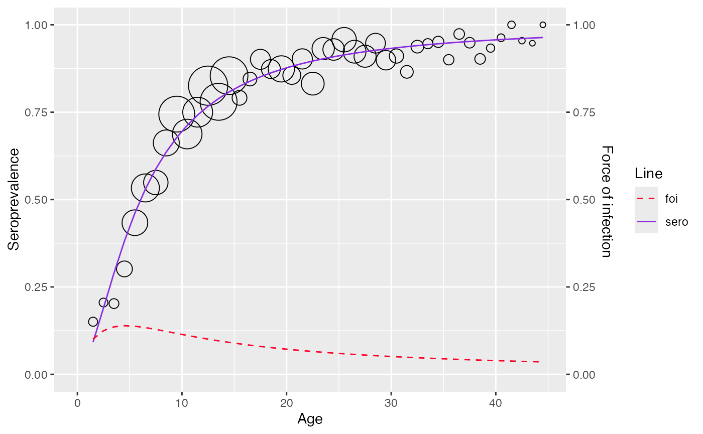

Parametric Bayesian framework
Currently, serosv only has models under parametric
Bayesian framework
Proposed approach
Prevalence has a parametric form where is a parameter vector
One can constraint the parameter space of the prior distribution in order to achieve the desired monotonicity of the posterior distribution
Where:
- and is the sample size at age
- and is the number of infected individual from the sampled subjects
Farrington
Refer to Chapter 10.3.1
Proposed model
The model for prevalence is as followed
For likelihood model, independent binomial distribution are assumed for the number of infected individuals at age
The constraint on the parameter space can be incorporated by assuming truncated normal distribution for the components of , in
The joint posterior distribution for can be derived by combining the likelihood and prior as followed
-
Where the flat hyperprior distribution is defined as followed:
The full conditional distribution of is thus
Fitting data
To fit Farrington model, use
hierarchical_bayesian_model() and define
type = "far2" or type = "far3" where
type = "far2"refers to Farrington model with 2 parameters ()type = "far3"refers to Farrington model with 3 parameters ()
df <- mumps_uk_1986_1987
model <- hierarchical_bayesian_model(age = df$age, pos = df$pos, tot = df$tot, type="far3")
#>
#> SAMPLING FOR MODEL 'fra_3' NOW (CHAIN 1).
#> Chain 1: Rejecting initial value:
#> Chain 1: Log probability evaluates to log(0), i.e. negative infinity.
#> Chain 1: Stan can't start sampling from this initial value.
#> Chain 1:
#> Chain 1: Gradient evaluation took 6.7e-05 seconds
#> Chain 1: 1000 transitions using 10 leapfrog steps per transition would take 0.67 seconds.
#> Chain 1: Adjust your expectations accordingly!
#> Chain 1:
#> Chain 1:
#> Chain 1: Iteration: 1 / 5000 [ 0%] (Warmup)
#> Chain 1: Iteration: 500 / 5000 [ 10%] (Warmup)
#> Chain 1: Iteration: 1000 / 5000 [ 20%] (Warmup)
#> Chain 1: Iteration: 1500 / 5000 [ 30%] (Warmup)
#> Chain 1: Iteration: 1501 / 5000 [ 30%] (Sampling)
#> Chain 1: Iteration: 2000 / 5000 [ 40%] (Sampling)
#> Chain 1: Iteration: 2500 / 5000 [ 50%] (Sampling)
#> Chain 1: Iteration: 3000 / 5000 [ 60%] (Sampling)
#> Chain 1: Iteration: 3500 / 5000 [ 70%] (Sampling)
#> Chain 1: Iteration: 4000 / 5000 [ 80%] (Sampling)
#> Chain 1: Iteration: 4500 / 5000 [ 90%] (Sampling)
#> Chain 1: Iteration: 5000 / 5000 [100%] (Sampling)
#> Chain 1:
#> Chain 1: Elapsed Time: 7.205 seconds (Warm-up)
#> Chain 1: 7 seconds (Sampling)
#> Chain 1: 14.205 seconds (Total)
#> Chain 1:
#> Warning: There were 568 divergent transitions after warmup. See
#> https://mc-stan.org/misc/warnings.html#divergent-transitions-after-warmup
#> to find out why this is a problem and how to eliminate them.
#> Warning: Examine the pairs() plot to diagnose sampling problems
#> Warning: Bulk Effective Samples Size (ESS) is too low, indicating posterior means and medians may be unreliable.
#> Running the chains for more iterations may help. See
#> https://mc-stan.org/misc/warnings.html#bulk-ess
#> Warning: Tail Effective Samples Size (ESS) is too low, indicating posterior variances and tail quantiles may be unreliable.
#> Running the chains for more iterations may help. See
#> https://mc-stan.org/misc/warnings.html#tail-ess
model$info
#> mean se_mean sd 2.5%
#> alpha1 1.401214e-01 3.547730e-04 6.258881e-03 1.285380e-01
#> alpha2 1.993669e-01 4.755861e-04 8.363286e-03 1.848245e-01
#> alpha3 8.856149e-03 3.568605e-04 7.071400e-03 4.349792e-04
#> tau_alpha1 1.655955e-01 3.058673e-02 3.947079e-01 1.762069e-06
#> tau_alpha2 1.324341e-01 2.370415e-02 2.930593e-01 2.488436e-06
#> tau_alpha3 7.120083e-01 1.464684e-01 1.637538e+00 3.348306e-06
#> mu_alpha1 5.309619e+00 2.830580e+00 5.072469e+01 -1.011749e+02
#> mu_alpha2 4.377174e+00 4.306267e+00 5.440375e+01 -1.063688e+02
#> mu_alpha3 9.083521e-01 2.602170e+00 3.312617e+01 -8.185717e+01
#> sigma_alpha1 1.438473e+02 3.692646e+01 1.158127e+03 8.186990e-01
#> sigma_alpha2 1.074171e+02 2.011728e+01 7.564462e+02 9.330434e-01
#> sigma_alpha3 1.890636e+02 9.517393e+01 5.132818e+03 3.995507e-01
#> lp__ -2.535748e+03 4.167295e-01 4.060532e+00 -2.544257e+03
#> 25% 50% 75% 97.5% n_eff
#> alpha1 1.356498e-01 1.399529e-01 1.441737e-01 1.532028e-01 311.23776
#> alpha2 1.933265e-01 1.992242e-01 2.047900e-01 2.172946e-01 309.23995
#> alpha3 3.306703e-03 7.023647e-03 1.243968e-02 2.624763e-02 392.65737
#> tau_alpha1 2.035679e-04 5.030110e-03 1.052841e-01 1.491946e+00 166.52741
#> tau_alpha2 2.822231e-04 4.927917e-03 8.502226e-02 1.148673e+00 152.84887
#> tau_alpha3 7.431981e-04 1.625552e-02 4.147886e-01 6.264065e+00 124.99567
#> mu_alpha1 -6.110784e+00 3.366331e-01 1.043346e+01 1.227509e+02 321.13506
#> mu_alpha2 -6.218693e+00 2.605688e-01 1.018331e+01 1.451005e+02 159.60841
#> mu_alpha3 -3.304551e+00 5.251649e-02 3.947081e+00 8.569737e+01 162.05831
#> sigma_alpha1 3.081901e+00 1.409975e+01 7.008830e+01 7.534708e+02 983.64134
#> sigma_alpha2 3.429523e+00 1.424519e+01 5.952645e+01 6.339306e+02 1413.89599
#> sigma_alpha3 1.552697e+00 7.843314e+00 3.668159e+01 5.465076e+02 2908.54511
#> lp__ -2.538286e+03 -2.535437e+03 -2.532915e+03 -2.528247e+03 94.94175
#> Rhat
#> alpha1 1.0003681
#> alpha2 1.0002450
#> alpha3 1.0064494
#> tau_alpha1 1.0035818
#> tau_alpha2 1.0137683
#> tau_alpha3 1.0023225
#> mu_alpha1 1.0024548
#> mu_alpha2 1.0050142
#> mu_alpha3 1.0061848
#> sigma_alpha1 0.9997586
#> sigma_alpha2 1.0009646
#> sigma_alpha3 0.9997631
#> lp__ 1.0214395
plot(model)
#> Warning: No shared levels found between `names(values)` of the manual scale and the
#> data's fill values.
Log-logistic
Proposed approach
The model for seroprevalence is as followed
The likelihood is specified to be the same as Farrington model () with
- Where
The prior model of is specified as with flat hyperprior as in Farrington model
is constrained to be positive by specifying
The full conditional distribution of is thus
And can be derived in the same way
Fitting data
To fit Log-logistic model, use
hierarchical_bayesian_model() and define
type = "log_logistic"
df <- rubella_uk_1986_1987
model <- hierarchical_bayesian_model(age = df$age, pos = df$pos, tot = df$tot, type="log_logistic")
#>
#> SAMPLING FOR MODEL 'log_logistic' NOW (CHAIN 1).
#> Chain 1:
#> Chain 1: Gradient evaluation took 1.6e-05 seconds
#> Chain 1: 1000 transitions using 10 leapfrog steps per transition would take 0.16 seconds.
#> Chain 1: Adjust your expectations accordingly!
#> Chain 1:
#> Chain 1:
#> Chain 1: Iteration: 1 / 5000 [ 0%] (Warmup)
#> Chain 1: Iteration: 500 / 5000 [ 10%] (Warmup)
#> Chain 1: Iteration: 1000 / 5000 [ 20%] (Warmup)
#> Chain 1: Iteration: 1500 / 5000 [ 30%] (Warmup)
#> Chain 1: Iteration: 1501 / 5000 [ 30%] (Sampling)
#> Chain 1: Iteration: 2000 / 5000 [ 40%] (Sampling)
#> Chain 1: Iteration: 2500 / 5000 [ 50%] (Sampling)
#> Chain 1: Iteration: 3000 / 5000 [ 60%] (Sampling)
#> Chain 1: Iteration: 3500 / 5000 [ 70%] (Sampling)
#> Chain 1: Iteration: 4000 / 5000 [ 80%] (Sampling)
#> Chain 1: Iteration: 4500 / 5000 [ 90%] (Sampling)
#> Chain 1: Iteration: 5000 / 5000 [100%] (Sampling)
#> Chain 1:
#> Chain 1: Elapsed Time: 1.11 seconds (Warm-up)
#> Chain 1: 6.852 seconds (Sampling)
#> Chain 1: 7.962 seconds (Total)
#> Chain 1:
#> Warning: There were 174 divergent transitions after warmup. See
#> https://mc-stan.org/misc/warnings.html#divergent-transitions-after-warmup
#> to find out why this is a problem and how to eliminate them.
#> Warning: Examine the pairs() plot to diagnose sampling problems
#> Warning: Bulk Effective Samples Size (ESS) is too low, indicating posterior means and medians may be unreliable.
#> Running the chains for more iterations may help. See
#> https://mc-stan.org/misc/warnings.html#bulk-ess
#> Warning: Tail Effective Samples Size (ESS) is too low, indicating posterior variances and tail quantiles may be unreliable.
#> Running the chains for more iterations may help. See
#> https://mc-stan.org/misc/warnings.html#tail-ess
model$type
#> [1] "log_logistic"
plot(model)
#> Warning: No shared levels found between `names(values)` of the manual scale and the
#> data's fill values.